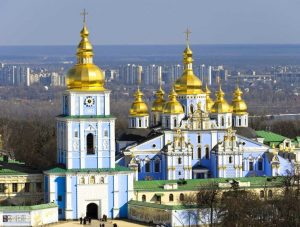

Заснування держави Україна Великим князем і гетьманом Богданом Хмельницьким
Минуле кожної країни і кожної нації ототожнюється в історичній пам’яті поколінь з епохальними подіями, які з плином часу не втрачають актуальності, а також виховного і повчального значення. Такою подією в нашій історії стало створення Української козацької держави на чолі з Богданом Хмельницьким, якого в останні дні грудня 1648 року проголошено великим князем Русі. Великий гетьман започаткував нову епоху в боротьбі української нації за незалежність і створення самостійної держави на основі ідеї відродження Князівської Руси-України
Заснування держави Україна Великим князем і гетьманом Богданом Хмельницьким Історія Публікації Прочитаєте за: 6 хв. 29 Березня 2021, 11:56 Минуле кожної країни і кожної нації ототожнюється в історичній пам’яті поколінь з епохальними подіями, які з плином часу не втрачають актуальності, а також виховного і повчального значення. Такою подією в нашій історії стало створення Української козацької держави на чолі з Богданом Хмельницьким, якого в останні дні грудня 1648 року проголошено великим князем Русі. Великий гетьман започаткував нову епоху в боротьбі української нації за незалежність і створення самостійної держави на основі ідеї відродження Князівської Руси-України. Саме за владарювання Хмельницького поняття «Україна» поступово перетворилося з географічної на політичну назву козацької держави Національно-визвольна війна, яку він очолив, спричинила революційні зрушення у політичній, соціальній, економічній і духовній сферах, докорінно змінила геополітичну ситуацію у Східній Європі. Богдан Хмельницький є батьком-засновником України – держави, яка пройшла тернистий шлях здобуття й утвердження незалежності, яка від 1991 року й донині існує як повноправний суб’єкт міжнародних відносин. Адже саме за владарювання Хмельницького поняття «Україна» поступово перетворилося з географічної на політичну назву козацької держави. Так, ще навесні 1650 року в одному з варіантів тексту договору гетьмана Б. Хмельницького з Молдавським князівством чи не вперше у практиці Війська Запорозького вжито словосполучення «українські землі» у розумінні «земель», що належать «Україні»: «У Польщі під владою Війська Запорозького має знаходитися така кількість українських земель, як сказано в умовах Зборівських пактів, починаючи від Дністра аж до Дніпра, а від Дніпра аж до московського кордону». А на початку 1657 року у проєкті угоди між Військом Запорозьким та Шведським королівством зазначалося: «…Хай розважить Хмельницький, чи годиться, щоб царя було визначено наступником Його Королівської Милості, бо він не хоче миру за інших умов, лиш хоче бути проголошеним королем, або щоб йому віддали Україну і велику частину Литви». «…А писатися йому Князем Київським і Чернігівським і гетьманом Війська Запорозького, а мати йому владу у своїй землі в отчинах своїх шляхетських, в судах і управах в тих краях, які йому, Хмельницькому, і козакам від Його Королівської Величності на віки спадковим правом дані і підтверджені будуть».
Прапор України

Держа́вний пра́пор Украї́ни — сучасний прапор України, стяг із двох рівновеликих горизонтальних смуг синього й жовтого кольорів. Співвідношення ширини прапора до його довжини 2:3[1]. Синій і жовтий (золотий) кольори використовувалися на гербі Королівства Руського XIV століття. Вони також уживалися на гербах руських земель, князів, шляхти й міст середньовіччя й раннього нового часу. Прапор України (1991—1992), пропорції 1:2 Марка Укрпошти «Перша річниця незалежності України. Державний Герб та Державний Прапор України». 1992 р. Зчіпка «20 років із часу затвердження Державного Прапора України, Державного Герба України і Державного Гімну України» із 2 марок: «Державний Прапор України», «Державний Герб України». 2012 р. Починаючи із XVI століття козаки Війська Запорозького використовували в невеликій кількості прапори-хоругви синьо-жовтих барв[2], а вже з 1710-х років синьо-жовті козацькі прапори почали переважати серед козацьких хоругов, такі прапори часто виготовляли із синього полотнища з нашитим на ньому лицарем у золотих або червоних шатах і золотим орнаментом та арматурою[3]. Синьо-жовтий прапор із червоним хрестом посередині з'являється у 1803 році як прапор Чорноморського козацького війська. Сучасний синьо-жовтий прапор був уперше публічно зафіксований 25 червня 1848 року у Львові, який українці Королівства Галичини й Володимирії вивісили над Львівською ратушею як національний прапор. Саме після цього випадку синьо-жовтий стяг набував усе більшої популярності в українців, а після Революції 1905 року його почали використовувати й у Наддніпрянській Україні[4]. У 1917—1921 роках, під час Української революції, цей стяг був державним прапором Української Народної Республіки й Української Держави. У 1938—1939 роках синьо-жовтий стяг був прапором Карпатської України, у 1941 році — Української Держави. Надалі, за радянських часів синьо-жовтий стяг використовувався підпільно, його використання в СРСР каралося ув'язненням на два роки. 1991 року, після розпаду СРСР, цей прапор де-факто використовувався як державний стяг незалежної України. 18 вересня 1991 року Президія Верховної Ради України юридично закріпила за синьо-жовтим біколором статус офіційного прапора країни[5][6]. 23 серпня в Україні щорічно святкують День Державного прапора.
Стролиця України
Київ – столиця України та одне з найстаріших міст Європи, засноване щонайменше 1500 років тому. Сучасне європейське місто здатне здивувати будь-кого – від любителів природної краси, архітектури та визначних пам'яток до тих, хто віддає перевагу більш насиченому та активному відпочинку. Київ побудовано на схилах живописної річки Дніпро, що дає можливість милуватися неповторними панорамами мегаполісу. Поряд із численною кількістю сучасних хмарочосів, торгівельно-розважальних та бізнес-центрів розташовані цікаві історичні будівлі, пам'ятки мистецтва й архітектури, тихі вузькі вулички із своєю історією та неповторним шармом. Тут велика кількість зелених скверів, парків, фонтанів, музеїв, університетів, храмів, театрів, кафе, ресторанів та клубів на будь-який смак. Як кожна столиця, Київ живе насиченим та бурхливим життям – розвивається, реконструюється, стає кращим, але одне залишається незмінним – бажання вивчати це місто та кожного разу відкривати його з іншого боку.